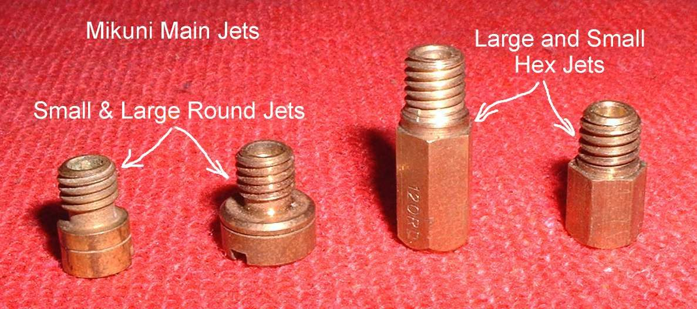
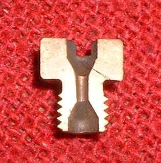
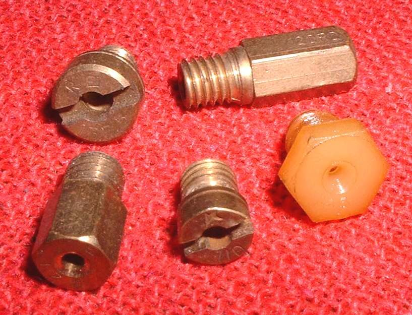

Jets are small brass parts with a metered hole. They set how much fuel the carburettor draws at each throttle opening. The idle (pilot) jet feeds idle up to about one quarter throttle. The needle jet and jet needle feed the middle range. The main jet feeds from about two thirds throttle to full throttle. The ranges overlap, so the change of one affects the others.
What it does
Vacuum in the throat of the carburettor draws fuel through each jet and into the air stream. The size of the hole and its position decide how much fuel is drawn at each throttle opening. Most idle jets screw in. Some newer ones are pressed in and cannot be changed.
Signs it is worn or failing
- Engine starts only with the choke on, or stalls at idle after standing: blocked idle jet. See Starts only with the choke on and Engine stalls at idle.
- Weak at full throttle, or too lean or rich: wrong or blocked main jet. See Engine runs lean and Engine runs rich.
- Damage after clumsy cleaning: a jet hole that has been drilled or scratched is too big.
When to replace it
Replace a jet that is cracked, has worn threads or a damaged hole, or will not pass light after cleaning. Change the size only for a reason, such as a new exhaust or filter, and work by the maker's size table. See Change the main jet and read the plug.
What to match when buying
- Make and model of the carburettor (Mikuni, Keihin, Bing, Amal and others).
- The number stamped on the old jet, and its thread and shape (round or hex head).
- Genuine jets carry the maker's mark. Copy jet kits are cheap but often have poor quality and the wrong hole size.
Fitting notes
- Handle small jets with care. Do not strip the thread or break the slot.
- Keep any washer or O-ring under the jet.
- After fitting, check light passes through the hole. See Clear carburettor jets and passages.